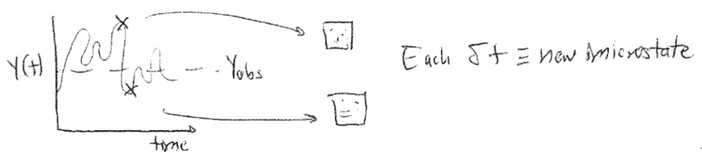

The Microcanonical Ensemble#
Additional Readings for the Enthusiast#
McQuarrie [2], Chapter 1, Chapter 2.1
Chandler [1], Chapter 3.1 - 3.2
Thermodynamics review#
The fundamental relation of thermodynamics#
We ended the last lecture by discussing the combined first and second law of thermodynamics (assuming a one-component system), which we write as:
This expression is also called the fundamental relation of thermodynamics in the energy representation. We can write an equivalent expression in terms of the entropy:
This is called the fundamental relation in the entropy representation. Each pair of variables that appear in this expression is called a pair of conjugate variables, consisting of an intensive prefactor and extensive differential. The four most common sets of conjugate pairs that we will discuss are:
Temperature (\(T\), intensive) and entropy (\(S\), extensive)
Temperature (\(T\), intensive) and energy (\(E\), extensive; from entropy representation of fundamental relation)
Pressure (\(P\), intensive) and volume (\(V\), extensive)
Chemical potential (\(\mu\), intensive) and number of particles (\(N\), extensive)
Because the energy is a state function, we can also write an exact differential of \(dE\) to obtain expressions for intensive variables:
The subscripts indicate that the partial derivative is taken with the subscripted variable held constant. We can think of the exact differential as essentially saying that the change in energy as a function of \(S\) and \(V\) (obtained by integrating this expression) can be obtained by computing the energy change along a two-part path consisting of a constant \(V\) path in which \(S\) varies (corresponding to the first term) and a constant \(S\) path in which \(V\) varies. We could similarly write an exact differential for \(E\) in terms of any variables thermodynamic variables. However, this particular exact differential is useful because we can compare it to the fundamental relation in the energy representation to obtain:
In other words, the temperature is defined as the partial derivative of the internal energy with respect to entropy at constant volume. Using these relations, we find that for each pair of conjugate variables that appears in the fundamental relation, the variable that is always intensive can be expressed as a partial derivative of either the energy or the entropy with respect to its conjugate extensive variable and with all other extensive variables held constant.
Natural variables#
We can extend the fundamental relation to include additional work terms (i.e., additional conjugate pairs) by writing:
We will typically omit work terms other than pressure-volume and chemical work unless required to include them by a specific problem. Note again that each intensive variables (\(T, -P, \mu\)) can be written as a partial derivative of the internal energy with respect to its conjugate extensive variable. As a result, we could integrate the fundamental relation to obtain a function that is only a function of the extensive variables - that is, a function of the form \(E(N, V, S)\) since each intensive variable is fully specified in terms of these variables. \(N\), \(V\), and \(S\) are called the natural variables of the internal energy. Similarly, \(N\), \(V\), and \(E\) are the natural variables of the entropy, \(S(N, V, E)\), based on the fundamental relation in the entropy representation. By inspection of the fundamental relation, we see that \(dE = 0\) for any process in which \(N\), \(V\), and \(S\) are held constant (such that \(dN = dV = dS = 0\)) and therefore \(E(N, V, S)\) is at an extremum. If we were to control the natural variables via suitable experimental manipulation, or by imposing the appropriate boundaries on a system, we could then predict that the corresponding thermodynamic potential would go to an extreme. We will take advantage of this behavior later.
Equilibrium#
A system is said to be at equilibrium when there is no driving force to change intensive variables in the system and the system’s properties do not change as a function of time. A system that is at equilibrium is described as being in an equilibrium state which is fully specified by the values of the thermodynamic parameters described above. The three most relevant conditions of equilibrium that we will discuss are:
Thermal equilibrium: if a system has diathermal walls, at equilibrium the temperature of the system will be equivalent to the temperature of the surroundings, or \(T^\textrm{sys} = T^\textrm{surr}\).
Mechanical equilibrium: if a system has movable walls, at equilibrium the pressure of the system will be equivalent to the pressure of the surroundings, or \(P^\textrm{sys} = P^\textrm{surr}\).
Chemical equilibrium: if a system has open walls, at equilibrium the chemical potential of each component of the system will be equivalent to the chemical potential of each component in the surroundings, or \(\mu_i^\textrm{sys} = \mu_i^\textrm{surr}\).
In each case, the system is free to exchange an extensive variable and the corresponding intensive variable is then constant. These pairs of variables are again the conjugate pairs mentioned above. A given system can satisfy multiple conditions of equilibrium simultaneously.
Additional thermodynamic potentials#
It is possible to write other expressions, called thermodynamic potentials, that are equivalent in information content to the fundamental relation but have a different set of natural variables. In the third unit of this class, we will show that these relations are equivalent; here, we will only focus on the method for defining them. The procedure is as follows:
Identify the desired natural variables of the new potential (e.g., \(N,V,T\))
For any natural variable that is different from the natural variables of the internal energy (i.e., \(N,V,S\)), subtract the product of the desired natural variable and its conjugate from the internal energy, \(E\). The new expression defines the equivalent thermodynamic potential.
Examples of this protocol follow for several typical thermodynamic potentials. First, we define the enthalpy, \(H\), as the thermodynamic potential that is a function of the natural variables \(N,P,S\). This differs from the internal energy by the variable \(P\), so we subtract the product of \(P\) and its conjugate (\(V\)) to generate the expression for the enthalpy. The slight caveat here is that in our sign convention it is \(-P\), not \(P\), that is used in the conjugate pair, so we subtract \(-P\) instead:
We can now write an expression for the total derivative of the enthalpy and simplify using the fundamental relation to identify what constant variables lead to an extremum of the enthalpy:
The total derivative clearly illustrates that the natural variables of the enthalpy are \(N\), \(P\), and \(S\) as desired - if these variables are constant, the enthalpy reaches an extremum. We can now identify various relationships for thermodynamic parameters by comparing with the exact differential of the enthalpy:
We can repeat this protocol to identify a thermodynamic potential that is a function of the natural variables \(N,V,T\), called the Helmholtz free energy, \(F\) (here ignoring the chemical potential term for simplicity):
Finally, we can identify a thermodynamic potential that is a function of natural variables \(N,P,T\), called the Gibbs free energy, \(G\):
We will return to these expressions repeatedly throughout our discussion of statistical mechanics, and will discuss thermodynamic relations in more detail later in the course. If the importance of natural variables is not clear, you can first see that different thermodynamic potentials will reach extremum values when different conditions of equilibrium occur. For example, a system with impermeable, rigid, diathermal walls that reaches thermal equilibrium with the surroundings will have constant \(N\), \(V\), and \(T\), and thus the Helmholtz free energy (with corresponding natural variables) will reach an extremum value. Analysis of the Helmholtz free energy can then be used to understand how changes to this system properties affect its equilibrium behavior. We will further use the natural variables to connect to statistical mechanics as will be discussed in future lectures. For now, we conclude our review of thermodynamics.
Postulates of statistical mechanics#
Recall that our goal in statistical mechanics is to develop a mathematical framework that allows us to calculate the macroscopic, thermodynamic properties of a system from a description of the properties of individual molecules. For example, we might try to derive the value of a given thermodynamic property such as the temperature or pressure from the knowledge of the quantum mechanical energy levels available to a system with \(N\) particles. We will take the first steps toward accomplishing that goal in this lecture.
Imagine a system composed of a single-component gas enclosed within a sealed, rigid, insulated container. The walls of the container therefore prevent a change in the number of particles (\(N\)), the volume (\(V\)), or the energy (\(E\)) of the gas; the system is isolated. Equivalently, we could describe the system in terms of what macroscopic thermodynamic parameters are constant - this gas is defined as having constant \(NVE\), where these particular variables are constant due to the constraints imposed by the walls, as opposed to being constant due to a condition of equilibrium.
At the macroscale, these three parameters define the system - if I were to characterize the gas with no knowledge of the existence of individual gas particles, I would characterize it strictly in terms of the values of \(N\), \(V\), and \(E\). We therefore define the macrostate of the system as the particular values of \(NVE\) (and any thermodynamic parameters that are not fixed, such as the pressure or temperature in this example) that describe the current state of the gas. However, we know that at the microscale there are an enormous number of particle configurations that can fulfill these requirements. For example, assume that the gas is ideal and therefore the only contribution to the internal energy is the kinetic energy of each particle. Even if the total internal energy (i.e., the sum of the kinetic energy of each particle) is a constant value, there are an enormous number of ways that we could arrange particle positions in space that would still have the same internal energy, since the kinetic energy does not depend on particle positions.
If we were to take a snapshot of the gas at a particular instant in time and record the positions of all \(N\) particles, we would define a microstate of the system - that is, one particular configuration out of the enormous set of configurations of particle positions that have the same macroscopic values of \(N\), \(V\), and \(E\). There are thus many, many microstates that are compatible with a given macrostate. Oftentimes, authors will interchangably use the term “state” to mean “microstate,” which can be a bit confusing, but should be apparent from context.

Given this definition of a microstate, we can then define the concept of an ensemble of microstates. An ensemble is a mental collection of all possible unique microstates that are consistent with a specific macrostate; each member of the ensemble is considered identical macroscopically, but unique microscopically. We will discuss four primary ensembles in this course that are given names reflecting the choice of thermodynamic variables that are held constant. The ensemble for which all microstates have a fixed number of particles, volume, and internal energy, is called the microcanonical ensemble, or the \(NVE\) ensemble. The ensemble for which all microstates have a fixed number of particles, volume, and temperature, is called the canonical ensemble, or \(NVT\) ensemble. The ensemble for which all microstates have a fixed chemical potential, volume, and temperature, is called the grand canonical ensemble, or \(\mu VT\) ensemble. Finally, the ensemble for which all microstates have a fixed number of particles, pressure, and temperature is called the isothermal-isobaric ensemble, or \(NPT\) ensemble.
Many more ensembles are possible based on different thermodynamic constraints. There are a couple of caveats to note. First, note that each microstate of an ensemble will also have thermodynamic parameters that are not fixed, and can vary with each microstate. For example, we can define an instantaneous energy, \(E_i\), for the \(i\)th microstate in the canonical ensemble, and this energy will generally vary between microstates. Also note that in several of these ensembles parameters are fixed not due to the walls of the system but rather due to conditions of equilibrium, a point that we will return to in the next lecture.
The number of microstates in an ensemble is an important quantity referred to as the degeneracy of the ensemble, which we write as \(\Omega(N,V,E)\). The parentheses indicate the fixed variables in the corresponding ensemble, so this is the degeneracy of a microcanonical ensemble; the degeneracy of a canonical ensemble would be written as \(\Omega(N,V,T)\). For shorthand, I will occasionally refer to the degeneracy of the microcanonical ensemble as \(\Omega(E)\) which is equivalent to \(\Omega(N,V,E)\) unless otherwise specified. Here, we assume that the energy of a system is a discrete quantity such that the number of states can be counted explicitly. Systems for which the energy is nearly continuous are better described by a related concept called the density of states, \(\omega(N,V,E)\), which describes the number of states with an energy within a small interval \(E+dE\). We will largely deal with the degeneracy as our chosen quantity for most of this class. Other terms are often used to describe the degeneracy of an ensemble - for example, the microstates in an ensemble are often called the “phase space” of a system so that the degeneracy would be the “extent of phase space.”
Having defined an ensemble of microstates as a collection of thermodynamically identical but microscopically distinct configurations of a system, we can now define two fundamental postulates of statistical mechanics.
Postulate 1:#
The time-average value of a thermodynamic parameter, \(Y\), of a system is equal to the ensemble-average value of \(Y\).
The ensemble average is defined as the value of a parameter averaged across all microstates of a statistical ensemble, weighted by the probability that the system is in each microstate. We can formulate the first postulate mathematically as:
Equation [timeavg]{reference-type=”ref” reference=”timeavg”} defines the time-average value of \(Y\), written as \(Y_\textrm{obs}\). This notation indicates that this is the value of \(Y\) that I would observe if I were to measure the parameter experimentally (assuming a typical macroscopic measurement); in other words, this would be the volume/pressure/etc. of the macrostate. Equation [ensembleavg]{reference-type=”ref” reference=”ensembleavg”} defines the ensemble-average value of \(Y\), written as \(\langle Y \rangle\). The sum runs over the entire ensemble of microstates where \(Y_i\) is the value of \(Y\) in microstate \(i\), and \(p_i\) is the probability that the system is in microstate \(i\) (such that \(\sum_i^\textrm{microstates} p_i = 1\)). Equation [ergodic]{reference-type=”ref” reference=”ergodic”} therefore states that the value of a parameter for a macrostate can be written as the value of that parameter averaged across all microstates in the corresponding statistical ensemble. This postulate is the foundation of statistical mechanics!
This postulate, also called the ergodic hypothesis, illustrates the connection between statistical mechanics and thermodynamics by linking the macroscopic (observed) value of a thermodynamic variable to an average across a large number of particle configurations. We can picture this connection by again imagining a gas. Assume that the gas were allowed to exchange energy with the environment, such that it maintains a constant temperature but its energy can fluctuate. If we were to observe this gas for a long period of time and periodically take snapshots of molecular configurations, each snapshot by definition would be a microstate in the canonical (\(NVT\)) ensemble, and we could calculate the value of some non-fixed thermodynamic variable \(Y\) for each microstate (e.g., the energy or the pressure). As time progresses, we record more and more configurations of the system - we say that the system samples microstates. Some microstates may be sampled more often than others, and therefore we could record identical values of \(Y\) multiple times. If we waited a sufficiently long amount of time, the system would sample each microstate \(i\) according to the corresponding probability \(p_i\). Therefore, the time-average value of \(Y\) would be equivalent to taking the average of all the values I recorded - that is, the time-average value would be equivalent to the ensemble-average value according to the ergodic hypothesis.

There are two critical aspects of this postulate that relate to the observation time, \(\tau\). First, the properties of the system cannot change with time during the period of observation; that is, the system must be at equilibrium. Second, the observation time, \(\tau\), must be very long so that the system properly samples a representative number of microstates. “Very long” is obviously a qualitative statement; the relevant timescale to compare to is the autocorrelation time of the observable of interest. If we imagine placing the system in a single microstate and then observe the positions and energies of all particles as a function of time, the relevant autocorrelation time would be the time necessary for the system to reach a new microstate such that particle positions/energies are not correlated with the previously recorded positions/energies (we will return to this point in Unit 2 of this class). Autocorrelation times are generally very small - for example, the autocorrelation time for particle positions in a gas is on the order of picoseconds, so any macroscopic observation time will be sufficiently long to observe a representative set of microstates from the ensemble. However, some systems may have long autocorrelation times (e.g., glasses) and therefore may not sample a representative number of states during an expermient; such systems would then be non-ergodic.
Because the ergodic hypothesis tells us that ensemble averages can be related to macroscopic thermodynamic parameters, all of the rules of thermodynamics that you have learned and that we covered in the preceding lecture can be applied to ensemble-average parameters. For example, from the fundamental relation in the energy representation we can show:
These rules have been derived assuming some macrostate with values \(E\), \(S\), \(V\), and \(T\). However, the ergodic hypothesis now tells us that we can relate macroscopic parameters to microscopic parameters. For example, for an ensemble in which \(V\) and \(T\) are fixed and \(E\) is allowed to vary, I could equivalently write:
Note that I have not commented on the entropy, \(S\), which we will return to in Postulate 2.
Equation [ensembleavg]{reference-type=”ref” reference=”ensembleavg”} writes the ensemble average in terms of a summation over discrete microstates, with each microstate occurring in the ensemble with probability \(p_i\). In principle, however, we do not know the values of \(p_i\). The second postulate addresses this point.
Postulate 2:#
In the microcanonical ensemble, all microstates are equally probable.
This postulate, also referred to as the principle of equal a priori probabilities, states that each value of \(p_i\) is equivalent in Equation [ensembleavg]{reference-type=”ref” reference=”ensembleavg”} for microstates in the microcanonical ensemble, as there is no a priori reason to assign different probabilities. Using the definition of the degeneracy, \(\Omega(N,V,E)\), from earlier, this postulate defines
Note that we can define a degeneracy for any ensemble (e.g., \(\Omega(N,V,T)\) as the degeneracy of the canonical ensemble), but Postulate 2 only applies to the microcanonical ensemble.
In combination, the two postulates state that if an isolated system is observed for a long period of time, all possible microstates of the system will be visited with equal probability and the time-average value of a thermodynamic property will be equivalent to the average of that quantity across all microstates. As an aside, it is likely that there will always be some uncertainty in the measurement of \(E\) due to the quantum properties of a system (i.e., due to the Heisenberg uncertainty principle); however, this small uncertainty is effectively inconsequential.
The Boltzmann entropy#
We will close this discussion of the microcanonical ensemble with a third “postulate” that will be stated here (although it can be derived from future results). Specifically, we define the entropy for the microcanonical ensemble, \(S\), as:
where \(k_B = 1.381 \times 10^{-23}\) J/K is Boltzmann’s constant. This definition is also referred to as the Boltzmann entropy to distinguish from an alternative (but equivalent) definition given by Gibbs that will be discussed later. The entropy as defined is an extensive variable, as we know from thermodynamics, because in general the degeneracy of an ensemble will increase with system size. The entropy is also a property of the ensemble itself, unlike other thermodynamic variables such as the pressure which can be given a specific value for each microstate - in other words, we cannot write \(S_i\) as the entropy of a particular state.
Conceptually, this microscopic definition of the entropy agrees with the concept of entropy as a measure of the “disorder” of a system, as is often described in thermodynamics. Here, we quantify disorder as the number of equivalent microstates - we can imagine that for a gas, there are a much larger number of ways of repositioning particles to yield equivalent macroscopic properties than for a solid. Alternatively, we can think of the entropy as quantifying the volume of the phase space accessible to a system. Regardless of how you think of it, this definition of entropy provides another connection between the microscopic features of a system (i.e., the degeneracy or number of accessible microstates) and macroscopic thermodynamic parameters.

- 1
David Chandler. Introduction to Modern Statistical Mechanics. Oxford University Press, New York, 1st edition edition, September 1987. ISBN 978-0-19-504277-1. URL: http://pcossgroup.xmu.edu.cn/old/users/xlu/group/courses/apc/imsm_chandler.pdf.
- 2
Donald A. McQuarrie. Statistical mechanics. University Science Books, Sausalito, Calif, 2000. ISBN 978-1-891389-15-3. URL: https://vuquangnguyen2016.files.wordpress.com/2017/12/339279795-donald-a-mcquarrie-statistical-mechanics-bookzz-org.pdf.